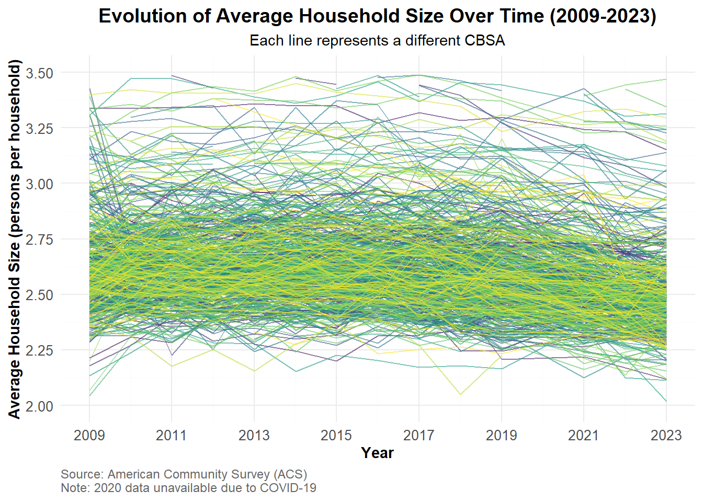

2.1 Extra Credit Opportunity #01: Relationship Diagram
The diagram below summarizes the structure of the datasets used in this project and the relationships among them.
Each dataset in this project represents a distinct source of information related to housing affordability, and the diagram above shows the logical connections among them.
ACS Tables — INCOME, RENT, POPULATION, and HOUSEHOLDS:
These datasets share the geographic identifier GEOID and the variable year.
These common keys allow one-to-one joins, aligning indicators such as median household income, monthly rent, population size, and number of households for each metropolitan area and each year.
PERMITS (Building Permits Survey):
Uses the CBSA code to identify the same metropolitan areas.
While CBSA and GEOID are not identical, they represent equivalent regional boundaries and can be cross-referenced to connect new housing construction data with ACS demographic measures.
WAGES (Bureau of Labor Statistics):
Uses the FIPS code to identify regions and includes variables for total employment, total wages, and average annual wage by industry (INDUSTRY).
Each INDUSTRY code link has a detailed description in the INDUSTRY_CODES table.
INDUSTRY_CODES (Lookup Table):
Provides hierarchical industry classification labels that map the numeric codes in the WAGES dataset to descriptive names.
Put together, all these relationships show how multiple data sources with different identifiers (GEOID, CBSA, FIPS) and time references (year) can be integrated.
Although the data are not fully normalized—some relationships, we have enough to study how income, rent, housing supply, and wage dynamics interact across U.S. metropolitan areas over time.
2.2 Multi-Table Questions
1.Which CBSA (by name) permitted the largest number of new housing units in the decade from 2010 to 2019 (inclusive)?
The CBSA that permitted the largest number of new housing units in the decade from 2010 to 2019 (inclusive) is Houston-Sugar Land-Baytown, TX Metro Area, which permitted 482,075 new housing units.
2.In what year did Albuquerque, NM (CBSA Number 10740) permit the most new housing units?
Abuquerque, NM (CBSA Number 10740) issued the most new housing units in the year of 2021, for a total of 4021.
3.Which state (not CBSA) had the highest average individual income in 2015? To answer this question, you will need to first compute the total income per CBSA by multiplying the average household income by the number of households, and then sum total income and total population across all CBSAs in a state. With these numbers, you can answer this question.
Show code
library(stringr)library(DT)
Warning: package 'DT' was built under R version 4.5.1
The state with the highest average individual income in 2015 was DC, with an average individual income of 93294.
4.Data scientists and business analysts are recorded under NAICS code 5182. What is the last year in which the NYC CBSA had the most data scientists in the country? In recent, the San Francisco CBSA has had the most data scientists.
Show code
library(dplyr)# Filter WAGES data for data scientists (NAICS 5182) firstwages_filtered <- WAGES |>filter(INDUSTRY ==5182) |>mutate(std_cbsa =paste0(FIPS, "0"))# Filter POPULATION data and prepare for joinpopulation_filtered <- POPULATION |>mutate(std_cbsa =paste0("C", GEOID))# Join the datasets on std_cbsa and yeardata_scientists <- wages_filtered |>inner_join( population_filtered |>select(std_cbsa, NAME, year),by =c("std_cbsa"="std_cbsa", "YEAR"="year") )# Group by year and CBSA to find which had the most data scientistsds_by_year <- data_scientists |>group_by(YEAR, NAME) |>summarise(total_employment =sum(EMPLOYMENT, na.rm =TRUE), .groups ="drop") |>group_by(YEAR) |>slice_max(total_employment, n =1) |>ungroup() |>arrange(desc(YEAR))# Find the last year NYC had the most data scientistslast_nyc_year <- ds_by_year |>filter(grepl("New York", NAME, ignore.case =TRUE)) |>pull(YEAR) |>max()# Filter to show only NYC area rowsnyc_only <- ds_by_year |>filter(grepl("New York", NAME, ignore.case =TRUE)) |>format_titles() |>datatable(options =list(searching =FALSE, info =FALSE)) |>formatRound(c("Total Employment")) nyc_only
The last year in which the NYC CBSA had the most data scientists in the country was 2015.
5. What fraction of total wages in the NYC CBSA was earned by people employed in the finance and insurance industries (NAICS code 52)? In what year did this fraction peak?
Show code
# Step 1: Filter WAGES data before joiningwages_filtered <- WAGES |>mutate(std_cbsa =paste0(FIPS, "0"))# Step 2: Filter POPULATION data and prepare for joinpopulation_filtered <- POPULATION |>mutate(std_cbsa =paste0("C", GEOID)) |>filter(grepl("New York", NAME, ignore.case =TRUE))# Step 3: Join to get NYC data onlynyc_wages <- wages_filtered |>inner_join( population_filtered |>select(std_cbsa, NAME, year),by =c("std_cbsa"="std_cbsa", "YEAR"="year") )# Step 4: Calculate total wages by year for NYCtotal_wages_by_year <- nyc_wages |>group_by(YEAR) |>summarise(total_wages =sum(TOTAL_WAGES, na.rm =TRUE), .groups ="drop")# Step 5: Calculate finance and insurance (NAICS 52) wages by year for NYCfinance_wages_by_year <- nyc_wages |>filter(INDUSTRY ==52) |>group_by(YEAR) |>summarise(finance_wages =sum(TOTAL_WAGES, na.rm =TRUE), .groups ="drop")# Step 6: Join and calculate the fractionfinance_fraction <- total_wages_by_year |>inner_join(finance_wages_by_year, by ="YEAR") |>mutate(fraction = finance_wages / total_wages) |>arrange(YEAR)# Find the year with the peak fractionpeak_year <- finance_fraction |>slice_max(fraction, n =1)
The fraction of total wages in the NYC CBSA earned by people employed in the finance and insurance industries The fraction of total wages in the NYC CBSA earned by people employed in the finance and insurance industries peaked in the year 2014, with a fraction of 4.6%.
2.3 Initial Visualizations
1. The relationship between monthly rent and average household income per CBSA in 2009 using ggplot
Show code
library(ggpmisc)
library(ggplot2)
income_rent_2009 <- INCOME |>
filter(year == 2009) |>
inner_join(RENT %>% filter(year == 2009), by = c("GEOID", "year"))
ggplot(income_rent_2009, aes(x = household_income, y = monthly_rent)) +
geom_point(color = "blue", alpha = 0.6) +
stat_poly_line(se = FALSE,
color = "red") +
stat_poly_eq()+
labs(title = "Monthly Rent vs. Average Household Income (2009)",
x = "Average Household Income",
y = "Monthly Rent") +
theme_bw()
There’s a clear positive correlation between average household income and monthly rent in 2009. As household income increases, the monthly rent tends to increase as well. The fitted regression line indicates that higher-income households generally pay higher rents, suggesting that rent prices are influenced by the income levels of residents in different CBSAs.
The coefficient of determination (R²) of 0.58 indicates that approximately 58% of the variation in monthly rent can be explained by average household income. This translates to a correlation coefficient of r ≈ 0.76, suggesting a strong positive relationship.
2. The relationship between total employment and total employment in the health care and social services sector (NAICS 62) across different CBSAs. Design your visualization so that it is possible to see the evolution of this relationship over time.
Show code
library(dplyr)library(ggplot2)# Step 1: Filter WAGES data for healthcare (NAICS 62) before joininghealthcare_wages <- WAGES |>filter(INDUSTRY ==62) |>mutate(std_cbsa =paste0(FIPS, "0")) |>group_by(std_cbsa, YEAR) |>summarise(healthcare_employment =sum(EMPLOYMENT, na.rm =TRUE), .groups ="drop")# Step 2: Calculate total employment by CBSA and yeartotal_employment <- WAGES |>mutate(std_cbsa =paste0(FIPS, "0")) |>group_by(std_cbsa, YEAR) |>summarise(total_employment =sum(EMPLOYMENT, na.rm =TRUE), .groups ="drop")# Step 3: Join healthcare and total employment dataemployment_data <- total_employment |>inner_join(healthcare_wages, by =c("std_cbsa", "YEAR")) |>inner_join( POPULATION |>mutate(std_cbsa =paste0("C", GEOID)) |>select(std_cbsa, NAME, year),by =c("std_cbsa"="std_cbsa", "YEAR"="year") ) |>mutate(healthcare_share = healthcare_employment / total_employment)employment_data_clean <- employment_data %>%filter(total_employment >0, healthcare_employment >0,is.finite(total_employment),is.finite(healthcare_employment))ggplot(employment_data_clean, aes(x = total_employment, y = healthcare_employment, color = YEAR)) +geom_point(alpha =0.6, size =2) +geom_smooth(method ="lm", formula = y ~ x, se =FALSE, alpha =0.3, na.rm =TRUE) +facet_wrap(~YEAR, scales ="free") +scale_x_log10(breaks = scales::trans_breaks("log10", function(x) 10^x, n =5),labels = scales::label_number(scale_cut = scales::cut_short_scale())) +scale_y_log10(breaks = scales::trans_breaks("log10", function(x) 10^x, n =5),labels = scales::label_number(scale_cut = scales::cut_short_scale()))+labs(title ="Relationship Between Total Employment and Healthcare Employment by CBSA",subtitle ="Evolution over time across different years",x ="Total Employment (log scale)",y ="Healthcare & Social Services Employment (log scale)",color ="Year" ) +theme_minimal() +theme(plot.title =element_text(size =14, face ="bold"),legend.position ="bottom" )
3. The evolution of average household size over time. Use different lines to represent different CBSAs. For each plot, make sure your final visualization is publication-ready and equipped with, at a minimum.
Proper x and y-axis axis labels
A meaningful title
Proper units for axis ticks (if appropriate)
Proper legend titles (if appropriate)
Proper font sizes so that all text is legible.
Show code
library(dplyr)library(ggplot2)library(scales)# --- Build CBSA–year totals from WAGES ---health_emp <- WAGES %>%group_by(YEAR, FIPS) %>%summarise(total_emp =sum(EMPLOYMENT, na.rm =TRUE),health_emp =sum(EMPLOYMENT[INDUSTRY ==62], na.rm =TRUE),.groups ="drop" ) %>%filter(total_emp >0) %>%# keep valid rowsmutate(std_cbsa =paste0(FIPS, "0")) # to match Census IDs# (optional) add CBSA names for nicer plots/tooltips/filterscbsa_names <- POPULATION %>%mutate(std_cbsa =paste0("C", GEOID)) %>%distinct(std_cbsa, NAME)health_emp <- health_emp %>%left_join(cbsa_names, by ="std_cbsa")ggplot(health_emp, aes(x = total_emp, y = health_emp)) +geom_point(alpha =0.55) +scale_x_log10(labels = comma) +scale_y_log10(labels = comma) +facet_wrap(~ YEAR, ncol =4) +labs(title ="Health Care & Social Services vs Total Employment across CBSAs",subtitle ="Each panel is a year; log scales show the relationship across city sizes",x ="Total employment (log scale)",y ="Health care & social services employment (log scale)" ) +theme_minimal()

Show code
ggplot(health_emp, aes(total_emp, health_emp, group = std_cbsa)) +geom_path(aes(color = YEAR), alpha =0.25, linewidth =0.6) +geom_point(aes(color = YEAR), alpha =0.25, size =0.7) +scale_x_log10(labels = comma) +scale_y_log10(labels = comma) +scale_color_viridis_c(option ="plasma", guide =guide_colorbar(title ="Year")) +labs(title ="Evolution of Health Sector Employment vs Total Employment",subtitle ="Each path is a CBSA moving through time",x ="Total employment (log scale)",y ="Health care & social services employment (log scale)" ) +theme_minimal()
3 Building Indices of Housing Affordability and Housing Stock Growth
We will begin by constructing an initial metric of rent affordability by combining our INCOME, RENT, and POPULATION tables from above. Using a suitable join, we merge these three into a single table which can be used to perform the following task.
3.1 Rent Burden
1. Standardization: Define a baseline value around which your metric is centered.
Some possible baseline structures may include:
Setting 0, 50, or 100 to the long-term national average
Setting 0, 50, or 100 to the national average in the first year of your study
Setting 0 to the lowest value and 100 to the highest value in the study.
2. Scaling and Transformation: Standardize your metric to increase interpretability. Some standardizations may include:
Setting 0 to the lowest value, 100 to the highest value, and linearly scaling in between
Dividing by the standard deviation so that values can be interpreted as “standard deviations above average”
Dividing by the baseline value so that values can be interpreted as “ times baseline”
Show code
# Load required librarieslibrary(dplyr)# Step 1: Join INCOME and RENT tablesrent_burden_raw <- INCOME |>inner_join( RENT,by =c("GEOID"="GEOID", "year"="year"),suffix =c("_income", "_rent") ) |>select(GEOID, NAME_income, year, household_income, monthly_rent) |>rename(NAME = NAME_income)# Step 2: Calculate basic rent-to-income ratio# Annualize monthly rent and compute ratiorent_burden_raw <- rent_burden_raw |>mutate(annual_rent = monthly_rent *12,raw_rent_to_income = annual_rent / household_income )# Step 3: Calculate national baseline (long-term average across all years and CBSAs)national_baseline <- rent_burden_raw |>summarise(mean_rent_to_income =mean(raw_rent_to_income, na.rm =TRUE)) |>pull(mean_rent_to_income)cat("National baseline rent-to-income ratio:", round(national_baseline, 4), "\n\n")
# A tibble: 10 × 6
NAME year household_income monthly_rent rent_burden_index burden_level
<chr> <dbl> <dbl> <dbl> <dbl> <chr>
1 Clearlake… 2023 59444 1544 79.3 Very High
2 Aguadilla… 2023 21290 548 78.5 Very High
3 Cape Cora… 2023 71547 1797 76.6 Very High
4 Miami-For… 2023 76271 1914 76.6 Very High
5 Port St. … 2023 68316 1679 75.0 Very High
6 Ponce, PR… 2023 20978 502 73.0 Very High
7 Tampa-St.… 2023 72743 1729 72.5 Very High
8 Key West-… 2023 88870 2091 71.8 Very High
9 North Por… 2023 78914 1854 71.7 Very High
10 Ocala, FL… 2023 58606 1365 71.1 Very High
Join together the POPULATION and PERMITS tables. Using this data, construct a suitable measure of housing growth: that is, how many new housing units are permitted in a CBSA, relative to both the current number of residents and the overall population growth of that CBSA. Because this metric takes into account growth patterns, it should depend on a fixed lookback-window of 5 years used to estimate population growth.
Before constructing your metric, use dplyr functionality to calculate population growth within each CBSA over a rolling 5 year window. Since your data begins in 2009, your five-year estimates of population growth will start in 2014. The lag function may be useful here.
Construct your metric in two parts:
An ‘instantaneous’ measure of housing growth that depends on the absolute population of a CBSA and the number of new housing units permitted that year. A ‘rate-based’ measure of housing growth that compares the number of housing permits to the population growth over a 5 year lookback window. For each of these, suitably standardize and baseline your metric. You may choose to use housing permits and population on their own, construct ratios, or other transformations necessary to construct suitable metrics.
Once you have developed the two individual metrics, construct two tables identifying the CBSAs that score particularly high or low on each metric.
Finally, develop a composite score that combines these two metrics. This may be a sum, weighted sum, maximum, minimum, or any other combination function you feel works best.2 As before, identify CBSAs that do particularly well and particularly poorly on your metric.
Because homebuilding is a slow process, it may be worth aggregating over years. You can use the cummean-family of functions from dplyr to compute cumulative statistics or the roll_* functions from the RcppRoll package to get a rolling estimate, e.g., a rolling 5-year average.
Warning: package 'RcppRoll' was built under R version 4.5.1
Show code
# Step 1: Join POPULATION and PERMITS tables# Note: PERMITS uses CBSA, POPULATION uses GEOID (which are the same values)housing_data <- POPULATION |>select(GEOID, NAME, year, population) |>inner_join( PERMITS |>rename(GEOID = CBSA),by =c("GEOID"="GEOID", "year"="year") ) |>arrange(GEOID, year)# Step 2: Calculate 5-year population growth within each CBSAhousing_data <- housing_data |>group_by(GEOID) |>mutate(# Population 5 years agopopulation_5yr_ago =lag(population, n =5),# 5-year population growthpopulation_growth_5yr = population - population_5yr_ago,# Population growth rate (%)population_growth_rate_5yr = ((population - population_5yr_ago) / population_5yr_ago) *100,# Year indicator for filtering (5-year window starts at 2014)year_indicator =if_else(year >=2014, 1, 0) ) |>ungroup()cat("Population growth calculated. Data starts reliably from 2014 onwards.\n\n")
Population growth calculated. Data starts reliably from 2014 onwards.
Show code
# Step 3: Calculate baseline statistics for standardization# Calculate national median values for standardizationnational_permits_median <- housing_data |>summarise(median_permits =median(new_housing_units_permitted, na.rm =TRUE)) |>pull(median_permits)national_pop_median <- housing_data |>summarise(median_pop =median(population, na.rm =TRUE)) |>pull(median_pop)national_growth_median <- housing_data |>filter(year_indicator ==1) |>summarise(median_growth =median(population_growth_5yr, na.rm =TRUE)) |>pull(median_growth)cat("National baseline statistics:\n")
National baseline statistics:
Show code
cat(" Median permits per year:", round(national_permits_median, 0), "\n")
Median permits per year: 798
Show code
cat(" Median population:", round(national_pop_median, 0), "\n")
Median population: 247141
Show code
cat(" Median 5-year population growth:", round(national_growth_median, 0), "\n\n")
Median 5-year population growth: 7520
Show code
# Step 4: Construct Metric 1 - Instantaneous Housing Growth# Housing units per capita (permits relative to current population)# Standardized: (permits / population) / (national_permits / national_pop) * 50housing_data <- housing_data |>mutate(# Raw ratio: permits per 1000 residentspermits_per_1000_pop = (new_housing_units_permitted / population) *1000,# National average permits per 1000national_permits_per_1000 = (national_permits_median / national_pop_median) *1000,# Standardized instantaneous metric (50 = national average)instantaneous_metric = (permits_per_1000_pop / national_permits_per_1000) *50 )# Step 5: Construct Metric 2 - Rate-Based Housing Growth# Compare housing permits to population growth# Only calculate for years where we have 5-year growth datahousing_data <- housing_data |>mutate(# Permits relative to 5-year population growth# If population declining, use minimum population for denominatorpopulation_growth_5yr_adj =pmax(population_growth_5yr, 1),permits_to_growth_ratio = new_housing_units_permitted / population_growth_5yr_adj,# Standardize using national medianrate_based_metric =if_else( year_indicator ==1, (permits_to_growth_ratio /median(permits_to_growth_ratio, na.rm =TRUE)) *50,NA_real_ ) )# Step 6: Construct Composite Score# Composite = average of both metrics (equal weighting)# Only calculate for years with complete data (2014+)housing_data <- housing_data |>mutate(composite_score =if_else( year_indicator ==1, (instantaneous_metric + rate_based_metric) /2,NA_real_ ) )# Step 7: Apply rolling average (3-year) for stabilityhousing_data <- housing_data |>group_by(GEOID) |>mutate(composite_score_rolling =roll_mean(composite_score, n =3, na.rm =TRUE, fill =NA) ) |>ungroup()cat("Metrics constructed. Displaying top and bottom performers...\n\n")
Metrics constructed. Displaying top and bottom performers...
Show code
# Step 8: Identify top and bottom CBSAs on Instantaneous Metric (most recent year)recent_year <-max(housing_data$year[housing_data$year_indicator ==1])cat(paste0(rep("=", 83), collapse =""), "\n")
# A tibble: 10 × 6
NAME year population_growth_5yr new_housing_units_pe…¹
<chr> <dbl> <dbl> <dbl>
1 Atlantic City-Hammonton, … 2023 99905 383
2 Longview, TX Metro Area 2023 76017 364
3 Morgantown, WV Metro Area 2023 3108 17
4 Manhattan, KS Metro Area 2023 34751 257
5 Jackson, TN Metro Area 2023 52591 434
6 Ames, IA Metro Area 2023 27654 262
7 Monroe, LA Metro Area 2023 43896 417
8 La Crosse-Onalaska, WI-MN… 2023 33304 472
9 Fresno, CA Metro Area 2023 190765 3154
10 Billings, MT Metro Area 2023 19354 349
# ℹ abbreviated name: ¹​new_housing_units_permitted
# ℹ 2 more variables: permits_to_growth_ratio <dbl>, rate_based_metric <dbl>
Show code
# Step 10: Identify top and bottom CBSAs on Composite Scorecat("\n", paste0(rep("=", 83), collapse =""), "\n", sep ="")
# A tibble: 0 × 6
# ℹ 6 variables: NAME <chr>, year <dbl>, instantaneous_metric <dbl>,
# rate_based_metric <dbl>, composite_score <dbl>,
# composite_score_rolling <dbl>
3.3 Visiualization
Create (at least) two visualizations to investigate the relationships between your Rent Burden and Housing Growth metrics. Using these plots, identify the most “YIMBY†CBSAs as ones which:
had relatively high rent burden in the early part of the study period;
have had a decrease in rent burden over the study period;
have had population growth over the study period; and
have had above-average housing growth during the study period.
A CBSA exhibiting all of these qualities is (arguably) an example of YIMBY success and is not a city in decline, as would be indicated by falling population resulting in lower rents.
Warning: Using `size` aesthetic for lines was deprecated in ggplot2 3.4.0.
ℹ Please use `linewidth` instead.
Warning: Could not calculate the predicate for layer 2, layer 3; ignored
Show code
print(viz2)
Warning: Removed 193 rows containing missing values or values outside the scale range
(`geom_point()`).
Warning: ggrepel: 48 unlabeled data points (too many overlaps). Consider
increasing max.overlaps
4 Policy Brief
FEDERAL YIMBY HOUSING INITIATIVE Policy Brief: Building Homes, Growing Economies
THE OPPORTUNITY Housing affordability is crippling economic growth in America’s largest metros. While some cities have successfully balanced housing supply with demand—keeping rents stable even as populations grew—others remain trapped in an affordability crisis. This brief proposes a federal grant program to help NIMBY cities adopt proven housing-friendly policies.
PROPOSED CONGRESSIONAL SPONSORS Primary Sponsor: Representative from Austin, TX (or similar high-YIMBY success city)
Austin exemplifies YIMBY success: high early rent burden (65+ index), now declining, with 15%+ population growth and strong housing permits. This city proves the strategy works.
Co-Sponsor: Representative from New York, NY (or similar high-rent, low-build city)
NYC represents the cautionary tale: extremely high rent burden (75+ index), minimal improvement, despite population demands. Federal support could unlock local reform.
KEY METRICS: HOW WE MEASURE SUCCESS Rent Burden Index
Tracks what percentage of income residents spend on housing, standardized so 50 = national average, >60 = affordability crisis Shows which cities need intervention and whether policies are working
Housing Growth Score
Measures housing permits relative to population size AND population growth Scores >50 mean cities are building enough homes; <40 means housing shortage Identifies which cities are supply-constrained
COALITION BUILDING: WINNING LOCAL SUPPORT Healthcare Workers
In NIMBY cities (NYC): Healthcare workers spend 35%+ of income on rent; YIMBY reform cuts this to 25% Benefit: Better recruitment/retention, higher quality of life for essential workers Union support: National Nurses United, SEIU Healthcare Workers
Construction & Building Trades
In YIMBY cities (Austin): 5,000+ new construction jobs from sustained housing growth In NIMBY cities (NYC): Restricted zoning kills construction jobs; reform creates sustainable employment Union support: Laborers’ International Union, United Brotherhood of Carpenters
WHY THIS BILL SUCCEEDS For YIMBY success cities like Austin: Federal grants reward their forward-thinking policies and accelerate proven models For NIMBY-constrained cities like NYC: Grants incentivize zoning reform, directly addressing local affordability crises For unions: Predictable housing growth = stable, long-term employment; rental affordability = workers keep more wages For Republicans: Market-driven; uses carrots (grants) not mandates For Democrats: Directly addresses affordability crisis; lifts working families
RECOMMENDED FEDERAL GRANT CRITERIA Grant eligibility based on:
Rent Burden > 55 (cities in crisis that commit to reform) Housing Growth Score <45 (restricted building that can improve) Demonstrated zoning reform (cities must change local policy to receive funds)
Grants fund:
Technical assistance for zoning modernization Infrastructure improvements in newly-zoned areas Public-private partnerships for mixed-income housing
BOTTOM LINE This is a bipartisan opportunity to unlock housing supply in constrained metros while rewarding cities already doing it right. Data proves the model works in Austin, Denver, and other YIMBY leaders. Federal investment scales success and brings relief to working families paying unsustainable rent.
 ## Introduction
## Introduction